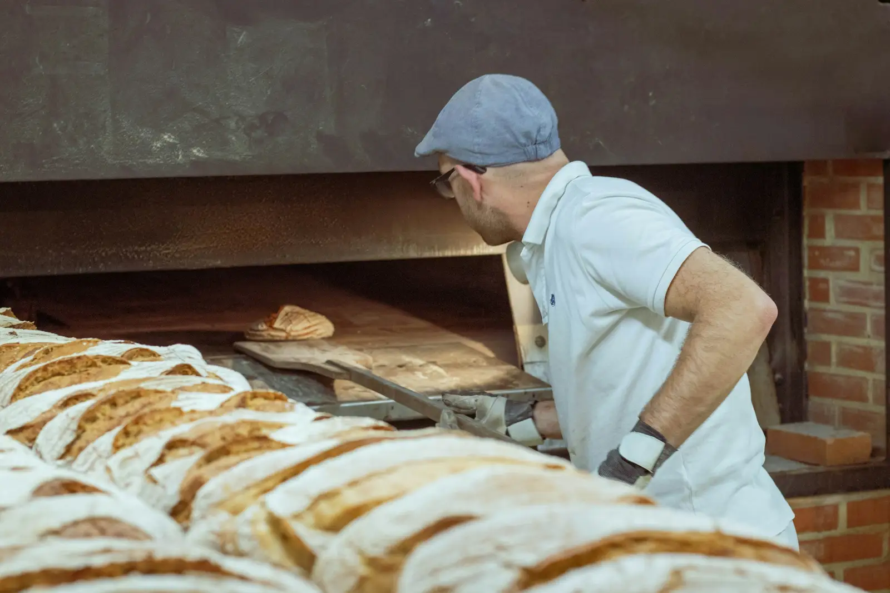
Boulangerie-pâtisserie à Soultz-Haut-Rhin
Le pain sort du four toute la matinée
Levain naturel, farines d'un moulin alsacien et viennoiseries au beurre façonnées chaque nuit. Le dimanche, le kougelhopf de la maison.
Les sorties du four
Du mardi au samedi. Le dimanche, une seule fournée à 7 h : baguettes et croissants.
6 h 30
Baguettes et pains blancs
La première fournée, prête à l'ouverture.
7 h
Croissants et pains au chocolat
Feuilletés la veille, cuits le matin même.
9 h 30
Pains au levain
Campagne, seigle, céréales et petit épeautre.
11 h 30
Deuxième fournée de baguettes
Encore tièdes pour le déjeuner.
16 h 30
Baguettes du soir
Pour le dîner, jusqu'à la fermeture.
Ce matin à la boutique
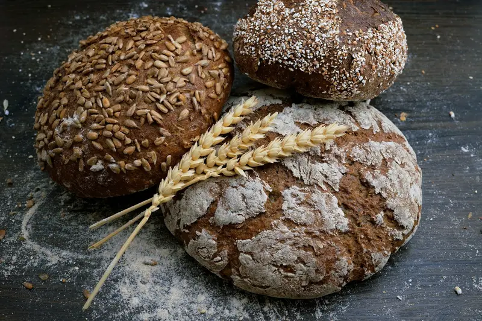
Pain de campagne au levain
6,20 €
miche d'environ 1 kg
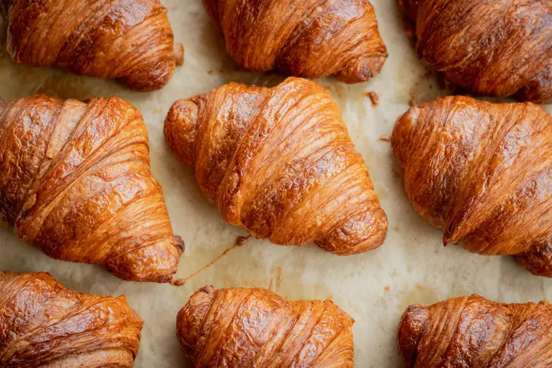
Croissant pur beurre
1,20 €
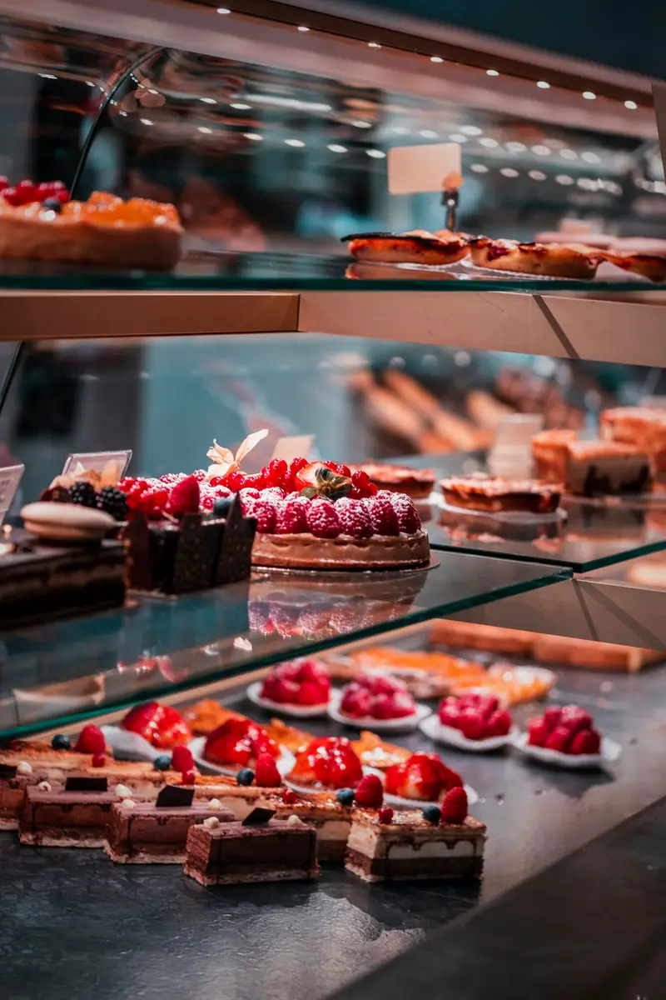
Tarte aux fruits de saison
3,80 €
la part
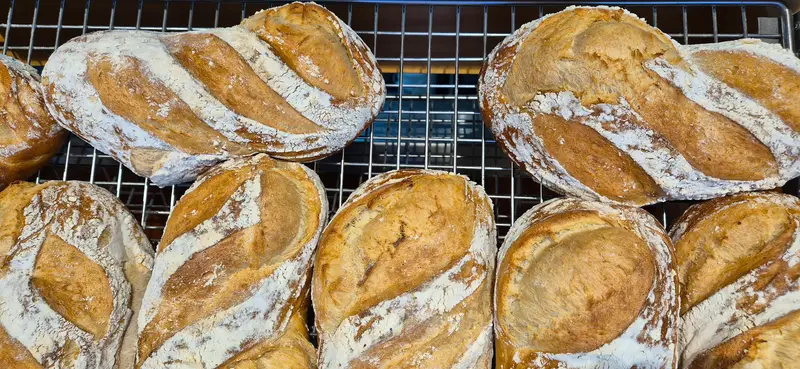
Baguette tradition
1,30 €
farine Label Rouge
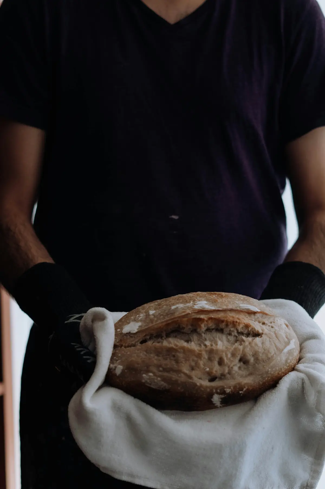
Le fournil
Cécile et Marc Brindel ont repris la boulangerie de la rue de la République en 2011. Le four à sole, lui, est là depuis plus longtemps qu'eux.
Le levain est nourri tous les jours, les pâtes reposent la nuit, et les farines viennent d'un moulin alsacien, à moins de cinquante kilomètres.
Cécile s'occupe des pâtisseries et de la boutique, Marc du fournil. Demandez-leur ce qui sort du four : il y a toujours quelque chose de chaud.
Cécile et Marc Brindel
Une nuit au fournil
Pendant que Soultz dort, le fournil travaille. Voici ce qui se passe avant l'ouverture.
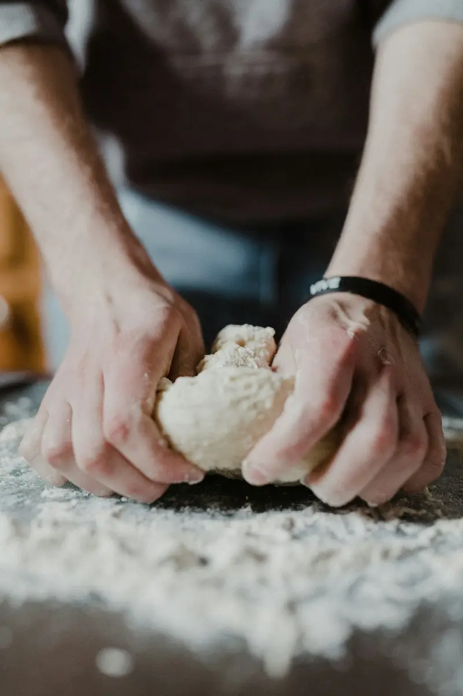
21 hLes pâtes sont pétries, puis reposent toute la nuit au frais.
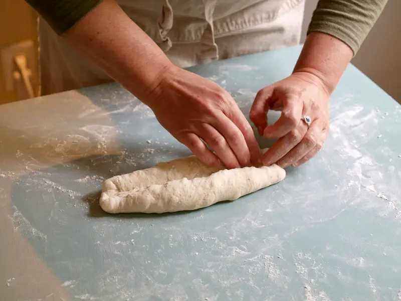
2 hMarc divise et façonne les pains, un par un, à la main.
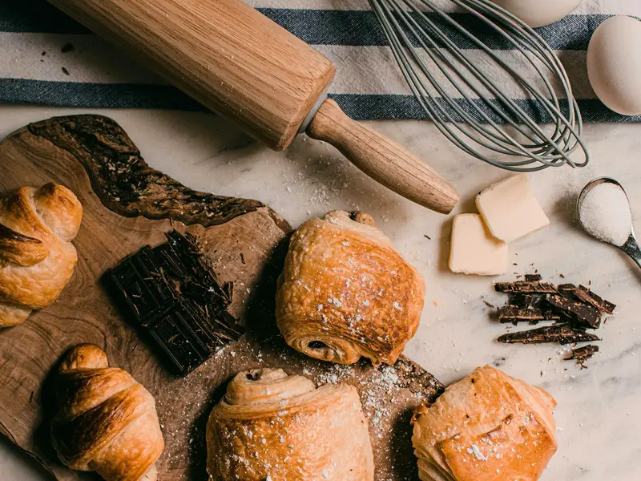
3 h 30Les croissants et les pains au chocolat sont roulés et mis à pousser.
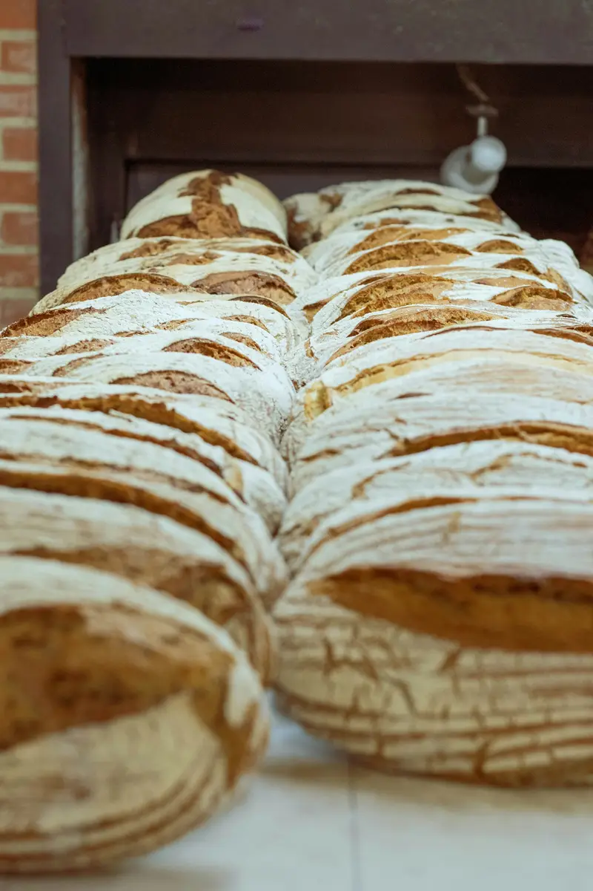
5 hPremière fournée dans le four à sole.

6 h 30La boutique ouvre, le pain est encore chaud.
Un gâteau pour dimanche ?
Cécile prépare les gâteaux sur commande, à partir de quatre parts. Commandez 48 heures à l'avance, par téléphone ou à la boutique.
- Entremets et tartes aux fruits
- Gâteaux d'anniversaire
- Kougelhopfs et pièces montées
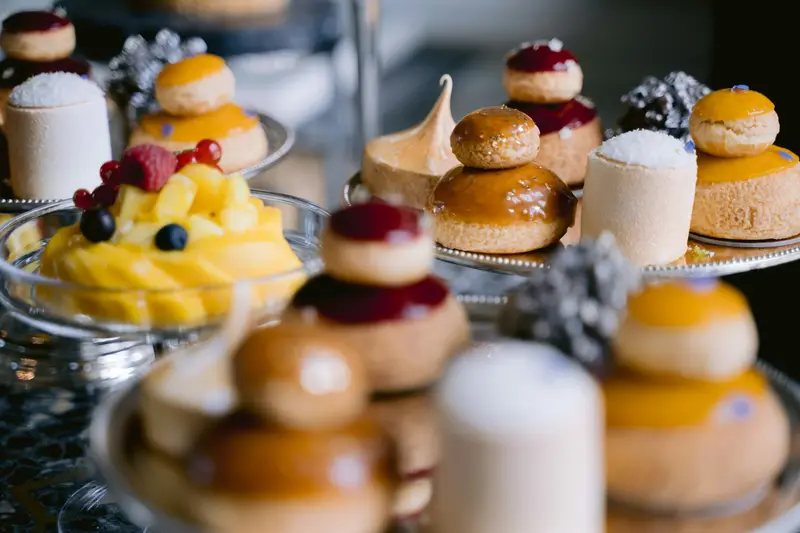
Ils nous recommandent
4,8
212 avis sur Google
Sophie K. Le pain au levain tient toute la semaine, et le kougelhopf du dimanche est le meilleur du coin. Toujours un mot gentil à la caisse, même quand la file déborde sur le trottoir.
Mathieu R. Commandé la veille sur le site pour 7 h : tout était prêt dans un sac à mon nom. Les croissants étaient encore tièdes.
Anne-Marie W. Gâteau d'anniversaire aux fruits rouges pour douze : magnifique et pas trop sucré. Cécile nous a bien conseillés sur la taille.
Les avis les mieux notés, du plus récent au plus ancien. Avis publiés sur Google par leurs auteurs, sans contrôle de notre part.
Avis imaginaires, comme l'entreprise. Sur le site d'un client, ses derniers avis Google s'affichent ici et se mettent à jour tout seuls.
Questions fréquentes
Peut-on réserver son pain ?
Oui, appelez la veille avant 18 h : votre commande vous attend au comptoir, à votre nom.
Faites-vous les gâteaux d'anniversaire ?
Oui, sur commande 48 heures à l'avance. Passez à la boutique ou appelez-nous pour choisir le parfum et le nombre de parts.
Avez-vous des pains sans gluten ?
Non : le fournil travaille la farine de blé toute la journée. Notre pain au petit épeautre contient moins de gluten, mais il en contient.
Horaires et accès
15 h 30 – 19 h
- 9 rue de la République
68360 Soultz-Haut-Rhin - 03 53 01 36 60
- bonjour@maison-brindel.example
- Itinéraire